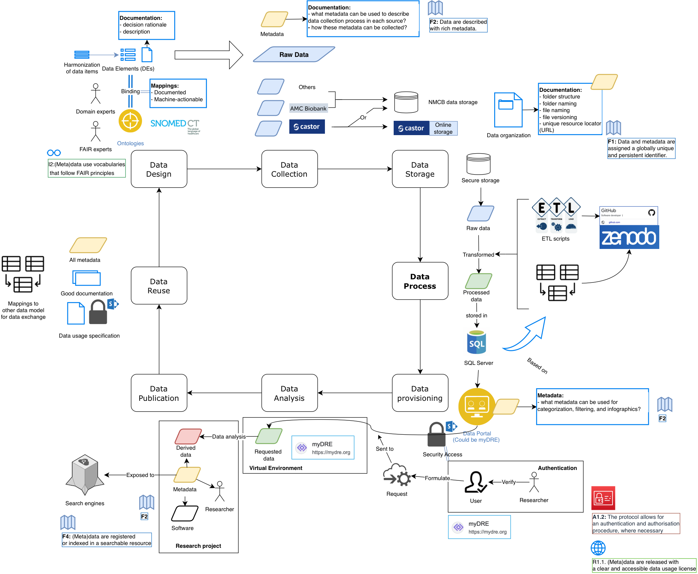

FAIRification (NMCB overview)¶
Strategic overview of how NMCB moves toward FAIR data (Findable, Accessible, Interoperable, Reusable): achievements, planned work, and how that connects to operational data management (Feb–April 2026). Detailed tooling lives in the other pages in this folder.
Sources: FAIR Work Summary v1, FAIR Data Flow v1, NMCB DM Workplan Feb–April 2026.
FAIR data flow (target architecture)¶
The diagram below is the v1 FAIR-oriented data flow (metadata, catalogues, harmonization, and reuse layers on top of operational pipelines). Use it together with the end-to-end data flow on the home page for day-to-day operations.

Full resolution (PDF): fair-data-flow-v1.pdf
What we have achieved¶
-
Shared terminology with other studies — About 80% of NMCB variables are linked to international standards (SNOMED CT, LOINC, NCIT) so equivalent concepts align across datasets; the remaining ~20% are newer fields still to be mapped. See Ontology harmonization and Controlled vocabulary.
-
A detailed data dictionary — The NMCB codebook documents each variable (meaning, format, allowed values), supporting clarity and reuse without ad hoc explanations.
-
OMOP Common Data Model (ongoing) — Alignment with OMOP CDM so NMCB can be analyzed with the same tools as other cohorts. Snowflake implementation is tracked in the workplan below.
-
FAIR Implementation Profile — Documented FER choices for survey vs biobank digital object types; see FIP — NMCB FER selections.
What comes next¶
| Priority | Direction |
|---|---|
| Findability | Persistent identifiers (e.g. DOIs) for datasets/variables; metadata in catalogues (Health-RI, Amsterdam Cohort Hub, BBMRI). See Health-RI metadata, FAIR Data Point, PAIS metadata schema. |
| Metadata schema | Study-level structure for what metadata exists, how it is organized in NMCB, and how it exchanges with national catalogues. |
| OMOP | Extend modelling and implement tables in Snowflake. |
| Machine-readable codebook | Maintain and extend LinkML / automated exports from the codebook repo. |
| FAIR training & SOPs | Apply FAIR principles to training materials and SOPs (findable, versioned, reusable). |
| Access rules | Transparent data-access procedures and clear licences for responsible reuse. |
Why it matters¶
- Researchers can discover and understand NMCB data more easily.
- Studies can be linked to other ME/CFS and post-COVID efforts.
- Data can be reused responsibly, saving time and duplication.
- NMCB participates in a sustainable international data ecosystem (Health-RI, ZonMw FAIR programmes).
Operational bridge: DM workplan (Feb–April 2026)¶
The Feb–April 2026 workplan ties FAIR goals to deliverables the data team was driving while FAIR initiatives had no dedicated follow-up in daily ops. By end of month 3 the plan aimed for: OMOP in Snowflake, stable multi-centre pipelines, new sources onboarded, semi-automated data/sample requests, and a prototype data catalogue plus enriched codebook.
| Work package | Focus | FAIR link |
|---|---|---|
| WP1 | OMOP modelling & Snowflake | Interoperability (OMOP CDM) |
| WP2 | Multi-centre pipelines | Sustainable operational data |
| WP3 | New sources (VU-AMS, ACS, RDL) | Reusable, QC’d inputs |
| WP4 | Data request procedure | Access & governance |
| WP5 | Sample request automation | Access (biobank) |
| WP6 | Data catalogue | Findability (metadata, EHDS alignment) |
| WP7 | Codebook enrichment | Reusability (terminology, LinkML) |
| WP8 | Automated eligibility (Snowflake → LDOT) | Operational, not FAIR catalogue |
| WP9 | Patient summary for physician | Clinical workflow |
Download: nmcb-dm-workplan-feb-april-2026.docx
Workflow drawings & presentations¶
All files are in docs/files/fair/fairification/ (download from git or the published site).
| File | Description |
|---|---|
| fair-data-flow-v1.pdf | FAIR data flow diagram (v1) — figure on this page |
| fairification-for-nmcb-v1.pdf | FAIRification workflow for NMCB (archive drawing) |
| semantic-harmonization-workflow.pdf | Semantic harmonization workflow (archive drawing) |
| fair-work-summary-v1.docx | Plain-language achievements & next steps |
| nmcb-dm-workplan-feb-april-2026.docx | Three-month DM workplan (Feb–Apr 2026) |
| 20240223-nmcb-findability-update.pptx | Findability update (Feb 2024) |
| 20240521-fair-mp.pptx | FAIR presentation (May 2024) |
| fair-workshop-20240904.pptx | ZonMw FAIR workshop (Sep 2024) |
| zonmw-20250403.pptx | ZonMw update (Apr 2025) |
| nmcb-digital-object-types-fip-workshop.xlsx | Digital object types for FIP workshop (May 2024) |
| 20251119-data-management.pptx | Data management presentation (Nov 2025) |
Related pages¶
| Topic | Page |
|---|---|
| FIP / FER choices | FAIR Implementation Profile |
| Ontology & OMOP | Controlled vocabulary |
| National catalogue | Health-RI metadata |
| Operational data flow | Data flow (home) |
| DMP | Data management plan |